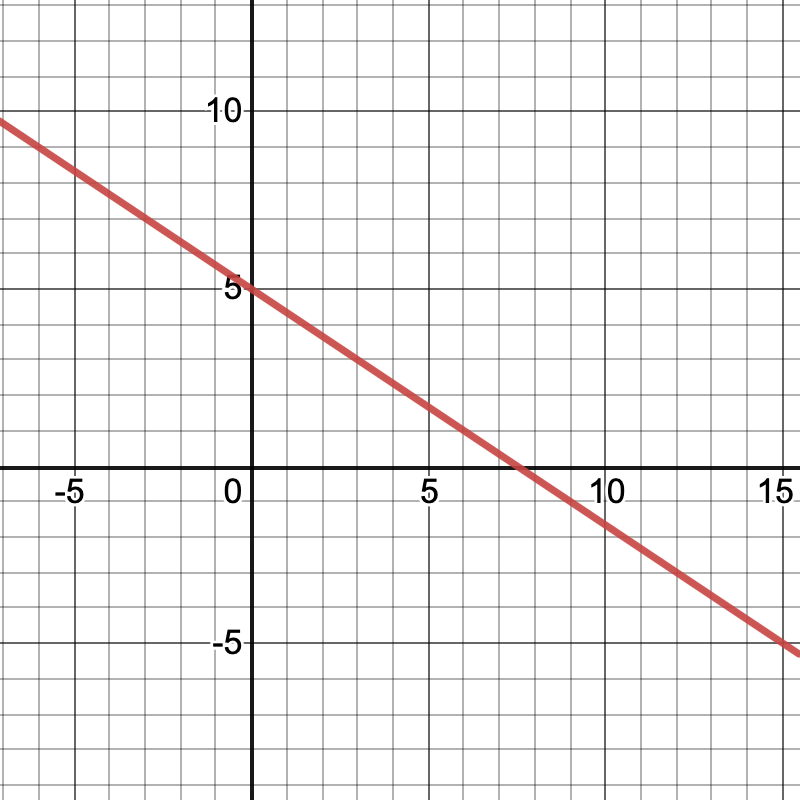
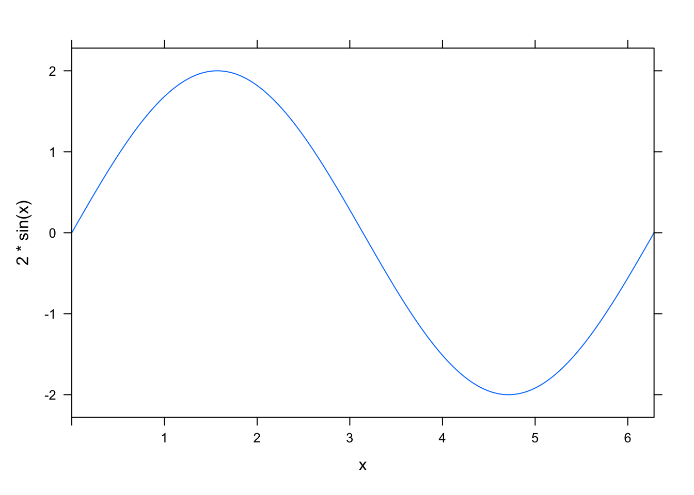
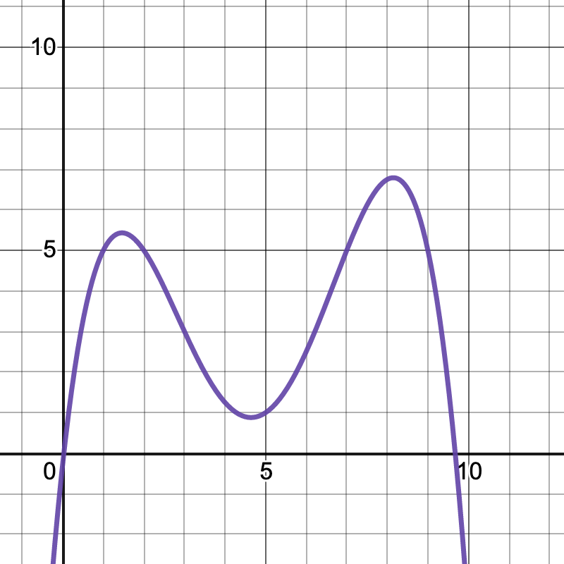

4 Linear Functions and Average Rate of Change
4.1 Goals
- Explain linear functions in words, tables, equations, and graphs
- Describe the effects of varying parameters in linear functions
- Assess whether given data is linear and, if so, model it
- Calculate average rate of change on an interval
- Recognize when a function is increasing or decreasing
- Recognize when a function is concave up or concave down
4.2 Linear Function Activities
4.2.1 Graph of a linear function
Find the equation \(y=mx+b\) for the graph shown below.

4.2.2 Height and weight of American men
The table below lists the average weight, \(w\), in pounds of American men in their sixties for height, \(h\), in inches.
| Height (inches) | 68 | 69 | 70 | 71 | 72 | 73 | 74 | 75 |
|---|---|---|---|---|---|---|---|---|
| Weight (pounds) | 166 | 171 | 176 | 181 | 186 | 191 | 196 | 201 |
- Which is the dependent variable and which is the independent variable?
- Is this an increasing function or a decreasing function?
- Can this be represented by a linear function? If so, find an equation to describe this data.
4.2.3 Scooter rates
A scooter company charges for monthly service according to the formula: \[C(t) = 5.99 + 0.23 t\] where \(t\) is the number of minutes minutes ridden.
Find and interpret the rate of change and the vertical intercept.
4.2.4 Oil reserves
There were 1650 billion barrels of proven oil reserves in the world as of 2016. At constant consumption levels (and excluding unproven reserves), the world had enough oil to last about 47 more years beyond 2016.
- Create a linear function \(R(t)\) that models the oil reserves (in billions of barrels) where \(t\) is the number of years since 2016.
- Find and interpret the rate of change and the vertical intercept of your function.
4.2.5 World population growth rate
The plot below represents the world population growth rate by year since 1995.
Y=c(0,5,10,15,20)
R=c(1.41,1.26,1.20,1.13,1.06)
plotPoints(R~Y,main="World Population Growth Rate",xlab="Year (since 1995)",ylab="Growth Rate")
- Explain why a linear model of this data is reasonable.
- Come up with an equation that (approximately) describes this data.
- What decision(s) did you make in part (b)? What are the strengths and weaknesses of your choice?
- Create a plot in RStudio that shows both the data points and the linear function that you found in part (b).
- Start by doing a cut-and-paste the R code above
- You can add your linear function to this plot using
plotFun(m*t+b~t,add=TRUE)wheremandbare the slope and the vertical intercept of the function you found in part (b)
4.3 Average Rate of Change Activities
4.3.1 AROC of a function
Find the average rate of change of the function \(f(x) = 2x^2 -3x + 1\) on the interval between \(x=-1\) and \(x=3\). Is the function increasing or decreasing on this interval?
4.3.2 Slope and Concavity
Sketch an example of a function that is
- Increasing and concave up
- Increasing and concave down
- Decreasing and concave up
- Decreasing and concave down
4.3.3 Example Function
Find the intervals for which the function is
- Increasing
- Decreasing
- Concave up
- Concave down

4.3.4 Vinyl LPs
Let \(V(t)\) denote the number of vinyl LP records sold in the US (in millions) in year \(t\).
\[ \begin{array}{c|c|c|c|c|c|c} t & 1995 & 2000 & 2005 & 2010 & 2015 & 2020 \\ \hline V(t) & 0.8 & 1.5 & 0.9 & 2.8 & 11.9 & 27.5 \end{array} \]
- Calculate the average rate of change for each of the five year intervals 1995-2000, 2000-2005, 2005-2010, 2010-15, 2015-2020.
- Use your answers from part 1 to determine whether the function \(V(t)\) is increasing or decreasing on these five year intervals.
- Use your answers from part 1 to estimate whether the function \(V(t)\) is concave up or concave down on each of the ten year intervals 1995-2005, 2000-2010, 2005-2015 and 2010-2020.